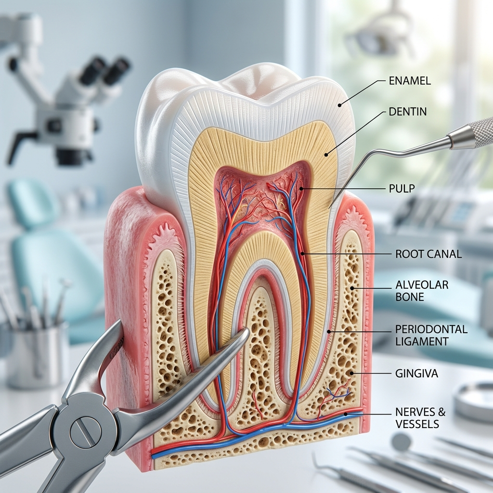
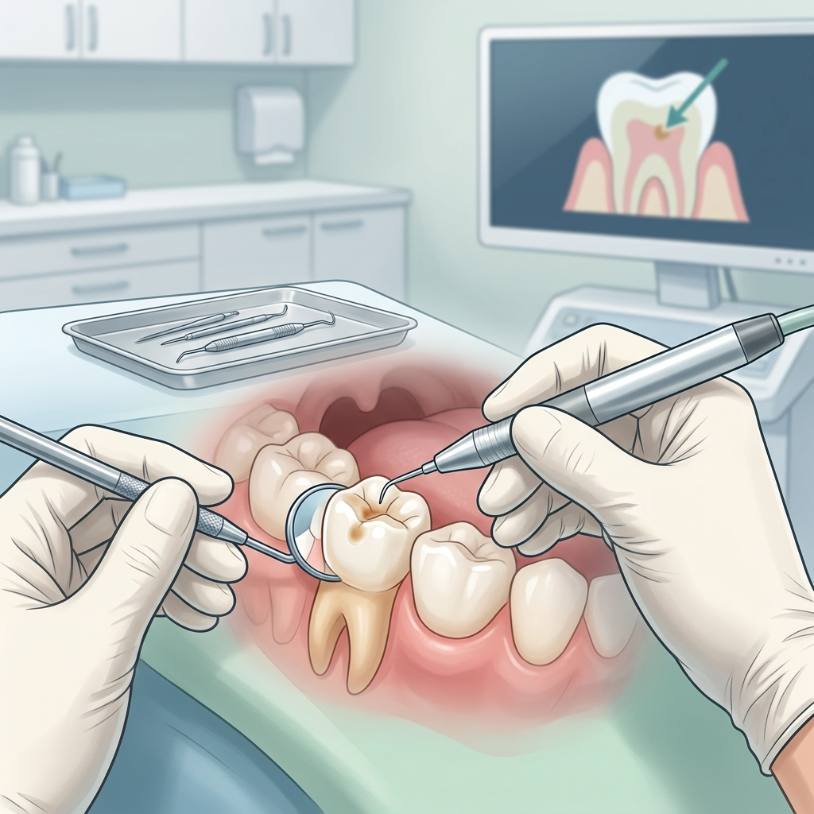
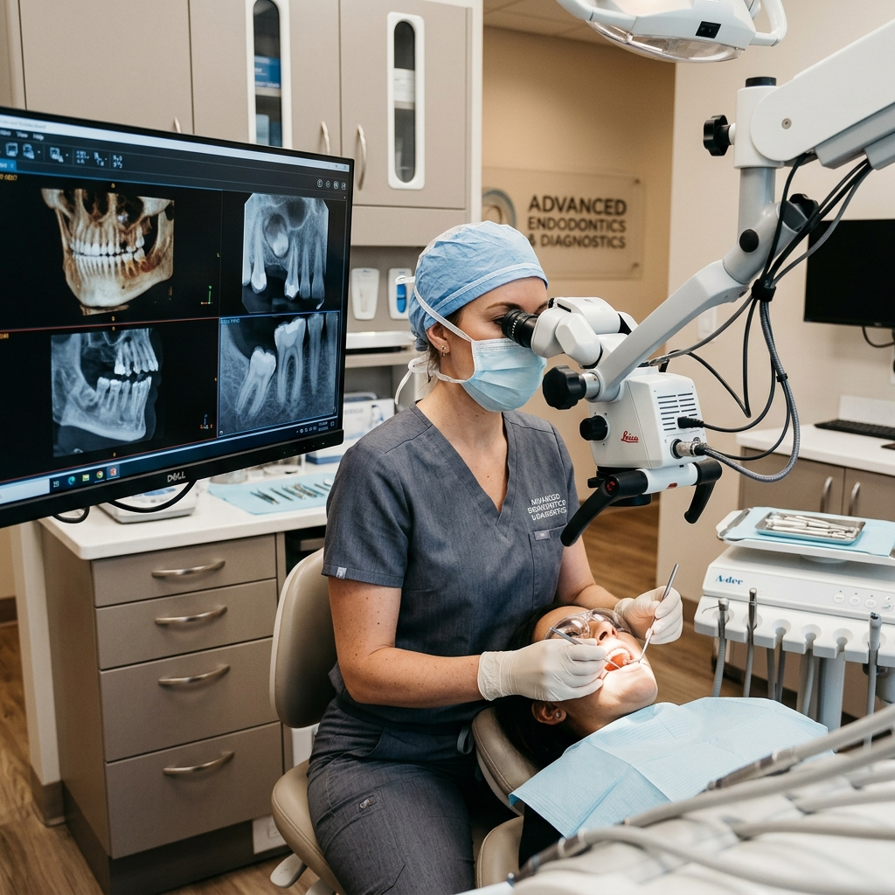
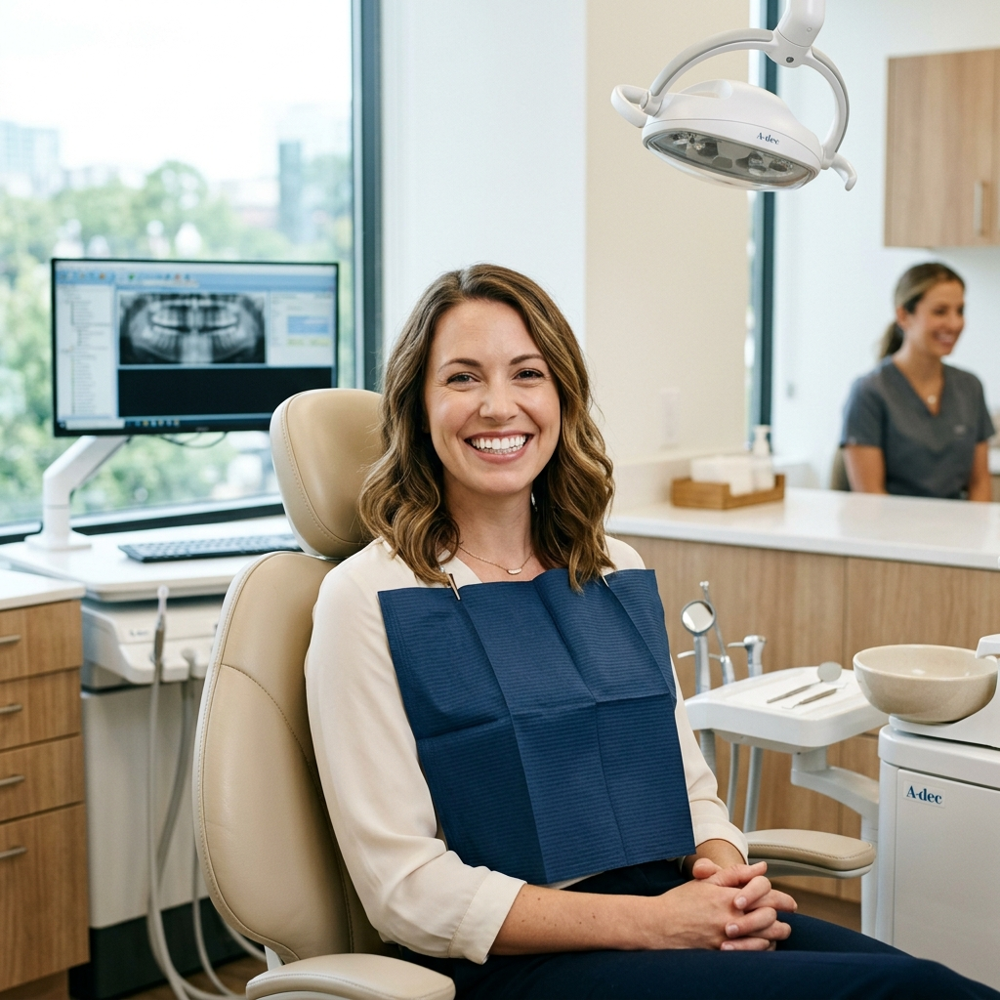

Microscopic Dentistry
Magnifying precision for superior results. Using advanced dental microscopy to identify and treat dental concerns with unprecedented accuracy.
What is Microscopic Dentistry?
Microscopic dentistry is an advanced technique that utilizes a high-powered dental microscope to magnify and illuminate target areas during procedures. This provides a level of detail that is simply not possible with the naked eye.
By using magnification, we can identify microscopic concerns early and perform procedures with extreme precision, leading to better outcomes, faster healing, and more conservative treatment of healthy tooth structure.
Why Microscopic Dentistry?
Precision diagnostics and treatment planning through high-resolution magnification.




Frequently Asked Questions
The microscope is invaluable for root canal therapy, early decay detection, restorative work like crowns and veneers, and high-precision aesthetic treatments.
While the setup might take a few moments longer, the precision often streamlines the procedure and can lead to fewer follow-up visits due to the high initial accuracy.
Not at all. In fact, many patients find it easier because the targeted approach often results in a more comfortable experience and faster healing.
Experience Precision Care
Discover how microscopic dentistry can provide more accurate and conservative results for your dental health. Book a diagnostic consultation today.
Schedule Precision Consultation